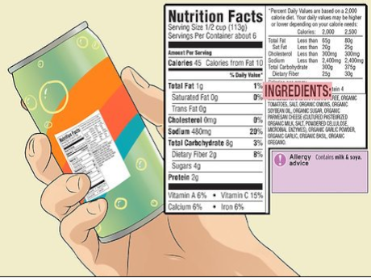

The evolution of food
The evolution of food has been impacted by multiple dates throughout the centuries. The 1800s were a time of significant advances in the food industry, including the invention of canning and pasteurization processes. In 1809, Nicholas Appert developed the first canned goods for the French military. This innovation helped to decrease food waste and expand the shelf life of food products. In 1864, Louis Pasteur discovered his namesake process, which involved heating food to kill bacteria and preserve it.
In the early 1900s, food processing made more progress with the invention of refrigeration and freezing techniques. In 1927, electrical refrigerator production began, and the technology quickly improved over the next decade. In 1930, Clarence Birdseye created the first commercial frozen food product. The invention of grocery stores also saw a growth in this period.
The 1940s marked the development of new ways of preserving food, such as dehydrating, freeze-drying, and canning. During this time, the government invested in nutrition research to provide a better understanding of what foods were essential to human health. World War II also led to a boost in food production, especially the use of processed foods.
The 1950s saw an explosion in food science, including the rise of additives, irradiation, and the introduction of hormones in animal products. By the 1960s, consumers had started to pay more attention to food safety and nutrition. Guidelines on food labeling, artificial flavors, and colors were enacted in the US and Europe.
The 1970s marked a shift towards a greater focus on nutritious eating with the introduction of low-fat diets, organic farming, and the first food pyramid. In 1976, genetically engineered plants became available for commercial use.
The 1980s saw more consumer awareness around environmental issues, leading to an increased demand for sustainably produced foods. The 1990s saw an increase in demand for functional foods that contain health-promoting ingredients. Genetically modified food then emerged as a prominent topic, resulting in debates surrounding its safety.
In conclusion, the evolution of food has been heavily influenced by many factors over the past few centuries. Significant milestones include the invention of canning, pasteurization, refrigeration, and freezing technologies in the 1800s and 1900s, the rise of additives and irradiation in the 1950s, the introduction of sustainable foods and functional foods in the 1970s and 1980s, and debates about genetically modified food in the 1990s.